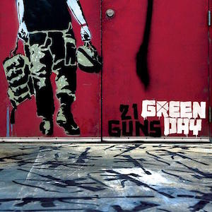

Audio
"21 Guns" adalah lagu dari band rock Amerika Green Day. Itu dirilis sebagai single kedua dari album studio kedelapan mereka, 21st Century Breakdown (2009), dan sebagai lagu keenam belas dari album tersebut. Single ini dirilis melalui Reprise Records pada 25 Mei 2009 sebagai unduhan digital dan 14 Juli 2009 sebagai single CD.
Video
Green Day adalah band rock terkenal dengan hits mereka "Boulevard Of Broken Dreams", "21 Guns", "Basket Case", "American Idiot", "Wake Me Up When September Ends", "Holiday", dan "When I Come Sekitar." Mereka bekerja dengan artis seperti U2, Ringo Starr, dan Miranda Lambert — mengumpulkan miliaran aliran global dan dilantik ke dalam "Rock and Roll Hall of Fame".
Gambar
Gambar adalah representasi visual dari objek atau scene. Gambar dapat membantu menyampaikan informasi atau membuat tampilan halaman lebih menarik. Pada halaman ini, gambar digunakan sebagai elemen visual yang terkait dengan audio dan video yang digunakan.
